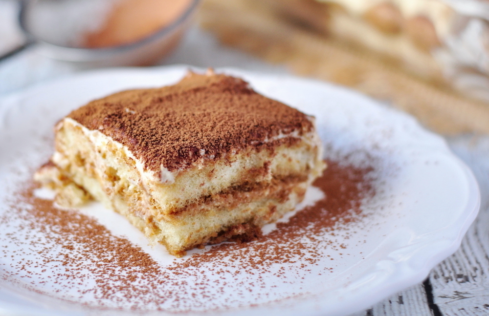

Tiramisu
Home

Description
Although it may seem difficult to make, tiramisu is actually one of the easiest desserts to make. You don't even need to bake it! In less than 10 easy steps, you can create a decadent dessert to share with your friends.
Ingredients
- Dutch Processed Cocoa Powder
- Espresso
- Vanilla Extract
- Pasteurized Eggs
- Sugar
- Kosher Salt
- Marscapone Cheese
- Heavy Cream
- Ladyfinger Cookies
Steps
- Whisk together the cocoa powder, espresso and vanilla in a bowl and set aside to really infuse the flavors together.
- In a mixer or using a hand mixer, beat the egg yolks and sugar until pale and thick, about 5 minutes.
- Add in the salt, mascarpone cheese and continue to whip until smooth.
- Add the chilled cream and continue to whip, until light, creamy and smooth.
- Make sure it can hold a soft peak.
- Dunk each ladyfinger in the espresso mixture to absorb the liquid and start to line a 7x11 oval baking dish with the cookies.
- Top the first layer of cookies with ½ of the whipped mascarpone mixture and use the back of a metal spoon to spread it into an even layer. Dust with cocoa powder
- Repeat for another layer and then finish by dusting with cocoa powder on top.
- Cover with plastic wrap and chill for at least 2 hours before serving.